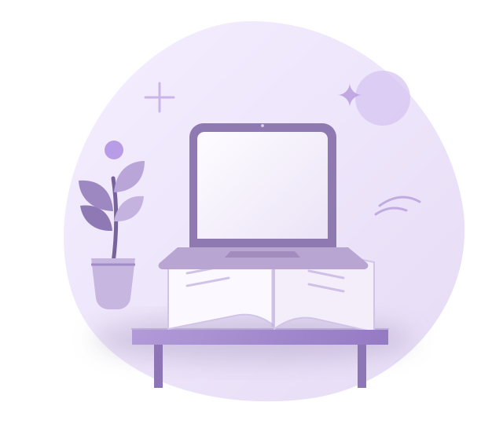
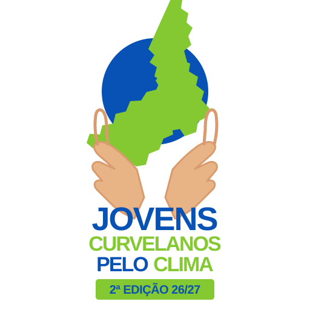
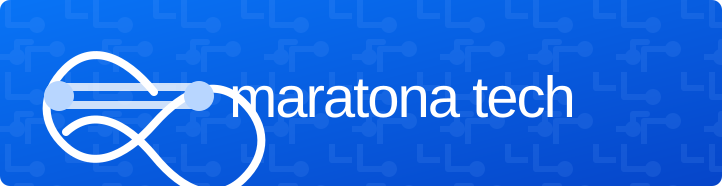
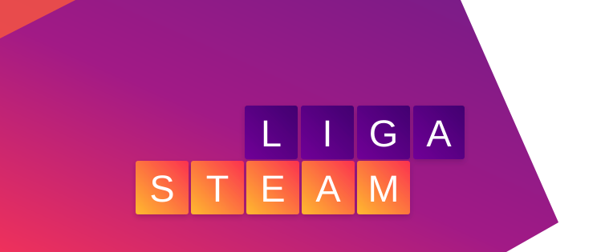
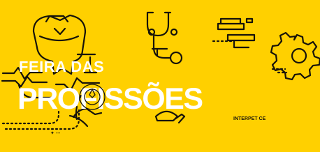

</>
Desenvolvimento de sites
HTML5 · CSS3 · JavaScript
ESTUDANTE DO EMTI COM DESENVOLVIMENTO DE SISTEMAS

01 — UM POUCO SOBRE MIM
Sou estudante de Desenvolvimento de Sistemas e venho aprofundando meus conhecimentos em programação e desenvolvimento web. Busco criar soluções digitais acessíveis e funcionais, combinando criatividade, atenção aos detalhes e tecnologia. Tenho interesse em desenvolvimento web e busco criar soluções digitais acessíveis, funcionais e centradas nas pessoas.
Que tal conversar? ↗02 — FERRAMENTAS QUE ESTOU EXPLORANDO
Conhecimentos desenvolvidos por meio dos estudos e da prática em projetos.
HTML5 · CSS3 · JavaScript
Algoritmos · Git · GitHub
SQL · VS Code · Figma
03 — MINHA JORNADA
Escola Estadual Irmã Raimunda Marques · Curvelo, MG
Conclusão prevista para dezembro de 2026.
Escola Estadual Irmã Raimunda Marques · Curvelo, MG
Estudos em programação, desenvolvimento de sites e banco de dados. Conclusão prevista para dezembro de 2026.
04 — PROJETOS E INICIATIVAS

Iniciativa de educação ambiental voltada à conscientização sobre as mudanças climáticas e à participação de jovens em ações locais. O projeto começou em 2026 e será finalizado em 2027.

Participei da Maratona Tech 2025, uma experiência de programação colaborativa em que equipes desenvolvem protótipos para responder a desafios tecnológicos.

A Liga Steam começou com o planejamento até 3 de julho de 2026, seguiu com a implementação nas escolas até 1º de outubro e o envio de relatórios de 2 a 23 de outubro. As etapas finais, com divulgação dos finalistas e premiação, ficaram para o segundo semestre de 2026. Na Liga Steam, estamos desenvolvendo uma estufa sustentável.

Evento de orientação profissional que apresenta diferentes áreas de atuação e aproxima estudantes de possibilidades de carreira.
05 — PRÓXIMO PASSO
Tenho interesse em oportunidades de estágio e colaboração na área de tecnologia. Será um prazer contribuir e continuar desenvolvendo minhas habilidades.
Entre em contato ↗